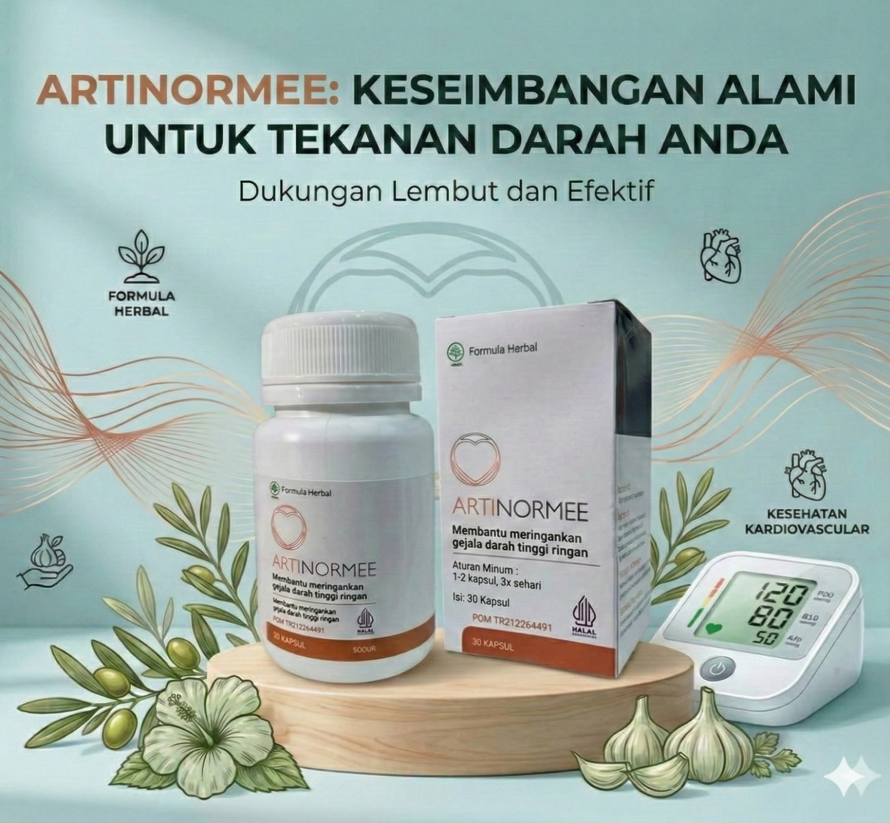

Artinormee adalah formula herbal yang dirancang khusus untuk mendukung kesehatan kardiovaskular Anda.

Harga Normal: 780.000 IDR
Hanya: 390.000 IDR
PESAN SEKARANG*Stok terbatas dengan harga promosi
Penyakit kardiovaskular adalah penyebab utama kematian di seluruh dunia. Menurut WHO, lebih dari 40% dari semua kematian disebabkan oleh penyakit jantung.
85% dari kematian ini terjadi akibat serangan jantung atau stroke. Jangan abaikan tekanan darah Anda!
Hipertensi arteri mengganggu seluruh tubuh. Artinormee dengan ekstrak alami (seperti Ekstrak Bawang Putih dan Syzigium Polyanthum Folium) membantu Anda dengan:
Membantu menstabilkan tekanan darah ke indikator fisiologis individu.
Mendukung irama jantung yang sehat dan membantu mengurangi kekentalan darah.
Mencegah perubahan aterosklerotik pada pembuluh darah dan melindungi jantung.
Mulai perawatan Anda secepat mungkin. Jangan biarkan hipertensi mengendalikan hidup Anda!
Harga Normal: 780.000 IDR
Hanya: 390.000 IDR
LAKUKAN TREATMENT SEKARANG